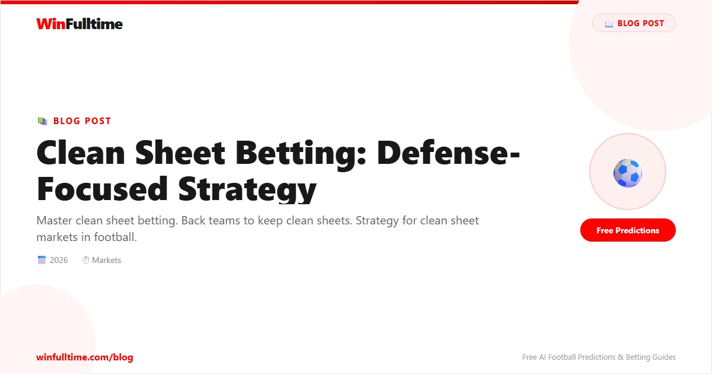

Clean Sheet Betting: Defense-Focused Strategy

Clean sheet betting is one of the most popular yet misunderstood markets in football. Many bettors simply back the league's best defensive teams without considering the specific match context, opponent quality, or the advanced metrics that truly predict whether a team will keep the opposition scoreless. In reality, clean sheet probabilities are far more nuanced — and profitable when properly analysed.
This guide provides a complete framework for clean sheet betting, covering market types, defensive metrics, goalkeeper impact, tactical factors, in-play strategies, and a worked example that ties everything together.
Clean Sheet Betting Markets Explained
Clean sheet markets are available in several formats. Understanding each market's structure is essential for identifying value.
Team Clean Sheet (Yes/No)
The most common market. You bet on whether a specific team will keep a clean sheet (prevent the opposition from scoring). Odds reflect the team's defensive strength, the opponent's attacking quality, and the match context. Available at Bet365, Betway, and all major bookmakers.
Both Teams to Score No
This is effectively a clean sheet market for either team. Backing"BTTS No" means at least one team keeps a clean sheet. This is often easier to predict than a specific team's clean sheet because it only requires one defence to hold firm.
Both Teams Clean Sheet
A rare market requiring both teams to keep clean sheets. Typically offered at high odds for defensive, low-scoring matchups.
First Team to Keep a Clean Sheet
A proposition market available on exchanges like Smarkets. Predict which team will record the first (or only) clean sheet of a matchday.
Clean Sheet + Win Accas
Many bookmakers offer special accumulators combining a team's clean sheet with their match win. These can offer boosted odds but require the favourite to dominate.
Team-Level Clean Sheet Analysis
Clean sheet rates vary dramatically between teams and are heavily influenced by home/away splits. A team that keeps clean sheets at home may concede freely on the road, and vice versa.
| Team | Home Clean Sheet % | Away Clean Sheet % | Overall Clean Sheet % |
|---|---|---|---|
| Manchester City (2024–25) | 68% | 47% | 58% |
| Arsenal (2024–25) | 63% | 53% | 58% |
| Real Madrid (2024–25) | 58% | 37% | 47% |
| Barcelona (2024–25) | 53% | 32% | 42% |
| Bayern Munich (2024–25) | 63% | 42% | 53% |
| AC Milan (2024–25) | 53% | 26% | 39% |
Data sourced from FBref and WhoScored. Notice the significant home/away splits — a team's clean sheet probability at home can be nearly double its away figure.
The Home Defence Value Strategy
Focus on mid-table teams with strong home defensive records facing poor attacking sides. Teams like Crystal Palace, Fulham, and Brentford often have clean sheet odds that undervalue their home defensive solidity. A mid-table side at home against a bottom-half team with a weak attack can offer clean sheet odds of 3.00–4.00 — often representing strong value when the data supports a 30–35% clean sheet probability.
Check Soccerway for each team's last 10 home defensive performances.
Defensive Metrics That Predict Clean Sheets
Not all clean sheets are equal. Some teams keep clean sheets through luck (opposition missing chances) while others consistently suppress chance creation. These are the metrics that distinguish sustainable clean sheet ability from variance:
1. Expected Goals Against (xGA)
xGA is the single best predictor of clean sheet probability. Teams that consistently concede low xGA (under 1.0 per game) are fundamentally solid defensively. A team with xGA of 0.8 per game has a much higher probability of keeping a clean sheet than a team with xGA of 1.5, regardless of recent results. Use Understat and FBref for league-specific xGA data.
2. Shots Faced
The number of shots a team faces per game, especially shots on target, correlates strongly with clean sheet probability. A team facing fewer than 8 shots per game (and fewer than 3 on target) is much more likely to keep a clean sheet. Check per-game shot data on WhoScored.
3. Shots in the Box
Shots from inside the penalty area are more dangerous and more likely to result in goals. Teams that limit opposition shots in the box (fewer than 5 per game) consistently keep clean sheets at higher rates than teams that allow long-range efforts.
4. Big Chances Conceded
A"big chance" is defined as a situation where a player should reasonably be expected to score. Teams that concede fewer than 1.5 big chances per game are elite defensive units. Premier League official stats track big chances conceded.
League Clean Sheet Rates
Clean sheet rates differ significantly by league due to attacking quality, tactical styles, and defensive organisation.
| League | Home Clean Sheet % | Away Clean Sheet % | Overall Clean Sheet % |
|---|---|---|---|
| Premier League | 38–42% | 22–26% | 30–34% |
| La Liga | 40–44% | 24–28% | 32–36% |
| Serie A | 42–46% | 26–30% | 34–38% |
| Bundesliga | 34–38% | 18–22% | 26–30% |
| Ligue 1 | 38–42% | 22–26% | 30–34% |
| NPFL (Nigeria) | 36–40% | 20–24% | 28–32% |
Serie A consistently has the highest clean sheet rates due to its tactical, defensive-focused culture. Bundesliga has the lowest. Data from Soccerway for the 2024–25 season.
Goalkeeper Impact on Clean Sheets
The goalkeeper is the most important individual factor in clean sheet probability. A world-class goalkeeper can be worth 5–8 points per season, translating to 2–4 additional clean sheets. Key goalkeeper metrics to evaluate:
- Save percentage — Top keepers save 75–80% of shots on target. Below 70% is poor.
- Post-shot xG prevented — Available on FBref, this measures goals prevented relative to shot quality. A positive value means the keeper is saving shots they are expected to concede.
- Clean sheet rate in last 15 matches — Form matters. A goalkeeper on a confident run is more likely to maintain it.
- Distribution and command of area — Goalkeepers who control their penalty area on crosses and set pieces reduce opposition chances and protect clean sheets.
When a team's starting goalkeeper is injured or suspended, the clean sheet odds often do not adjust enough. Backing against a team with a second-choice goalkeeper can be a profitable strategy.
Defensive Absences & Impact
Individual defender absences have a measurable impact on clean sheet probability. The loss of a key centre-back or defensive midfielder can reduce a team's clean sheet chance by 15–25%.
- Centre-back absence: The most impactful. A team without its primary centre-back pairing sees xGA increase by 0.3–0.5 per game.
- Defensive midfielder absence: The shield in front of the defence. A team without its primary defensive midfielder faces more shots and more dangerous chances.
- Full-back absence: Less impactful but relevant for teams that rely on full-backs for defensive width (e.g., Arsenal's system requires disciplined full-backs).
Check Transfermarkt for injury updates and Premier League official site for confirmed lineups. A key defender missing from the starting XI is one of the strongest signals for backing the opponent to score.
Match Context for Clean Sheets
Clean sheet probability is heavily influenced by match context. These situational factors matter more for clean sheets than for most other markets:
Home vs Away
Home teams keep clean sheets at nearly double the rate of away teams across all European leagues. The home advantage manifests in refereeing bias, familiar pitch dimensions, and crowd support driving defensive effort.
Opponent Attack Strength
A team's clean sheet probability is less about its own defensive quality and more about the opponent's attacking quality. A solid defence facing a top attack may keep a clean sheet 15–20% of the time; facing a poor attack, that figure rises to 40–50%. Always benchmark against the opponent's xG per game.
Match Timing & Fixture Congestion
Teams playing in European competitions midweek often rest defenders in the following league match, reducing clean sheet probability. Midweek league fixtures (Tuesday–Thursday) also produce fewer clean sheets as players are fatigued and defensive organisation suffers.
Scoreline Effects
A team leading 2–0 at half-time is far more likely to keep a clean sheet than a team leading 1–0. The two-goal cushion reduces the need to take risks, while the trailing team becomes increasingly desperate and vulnerable to counter-attacks that their own attacks expose them to.
In-Play Clean Sheet Betting
Clean sheet odds shift dramatically during matches, creating excellent in-play opportunities:
Early Goal Impact
If the favourite scores in the first 20 minutes, their clean sheet odds shorten significantly. However, if the underdog scores first, the favourite's clean sheet market is effectively dead — the only remaining value is on the underdog's clean sheet (which is often overpriced).
Half-Time Clean Sheet Value
If a team leads 1–0 at half-time, their clean sheet odds at half-time represent excellent value if the first half was controlled and the opponent created few chances. The bookmaker factors in 45 more minutes, but a team that has dominated defensively is likely to continue.
Red Card Dynamics
A red card for the defending team dramatically reduces clean sheet probability. However, a red card for the attacking team makes the defending team much more likely to keep a clean sheet. Jump on the clean sheet market immediately after a red card — bookmakers are slow to adjust.
Pro Tip: The Goalkeeper Save Streak
If a goalkeeper makes multiple high-quality saves in the first 30 minutes but the score remains 0–0, the market overcorrects for the"goalkeeper is playing well" narrative. In reality, the fact the goalkeeper has been forced into multiple saves indicates the defence is under pressure — the clean sheet is actually less likely, not more. Fade the overreaction by backing the opponent to score in-play.
Combining Clean Sheets With Other Markets
Clean sheet bets work well in combination with other markets for same-game multis and accumulators:
Clean Sheet + Win
The most natural combination. If a team keeps a clean sheet, they cannot lose. Backing a team to win to nil (win + clean sheet) often offers better odds than a standard win.
Clean Sheet + Under 2.5 Goals
Strong correlation. If one team keeps a clean sheet, the match cannot exceed 3–0 at most. Backing under 2.5 goals alongside a specific team's clean sheet provides boosted odds with a logical connection.
Clean Sheet + Team Corner Over
Weaker correlation but exploitable. Dominant teams that keep clean sheets often control possession and territory, generating many corners. Combine a team's clean sheet with their over on corners for higher-value multis.
Worked Example
Match: Arsenal vs Bournemouth (Premier League)
Market: Arsenal clean sheet yes @ 2.10 (implied 47.6% probability)
Arsenal Data (last 10 home matches):
Clean sheets: 6 (60%)
xGA per game: 0.72
Shots faced per game: 6.8
Shots on target faced: 2.4
Big chances conceded per game: 1.0
Bournemouth Data (last 10 away matches):
Goals scored per game: 1.1
xG per game: 1.15
Shots on target per game: 3.8
Big chances created per game: 1.3
Analysis: Arsenal's defensive metrics at home are elite. Bournemouth's away attack is below average. The 60% home clean sheet rate suggests fair odds of approximately 1.67, but the market offers 2.10.
Projected probability: 55% (based on xGA + opponent xG regression model)
Verdict: Arsenal clean sheet @ 2.10 has a clear positive expected value. The 55% estimated probability exceeds the 47.6% implied by the odds.
Common Clean Sheet Betting Mistakes
Confusing reputation with form: A team like Manchester City has a reputation for clean sheets, but their 2025–26 form may tell a different story. Always use trailing data, not season-long averages or reputation.
Ignoring the goalkeeper matchup: A backup goalkeeper in a crucial match is a red flag for clean sheet backers. Check the confirmed lineup before placing clean sheet bets.
Overvaluing clean sheets in cup competitions: Cup matches, especially knockout ties, often produce more conservative play on both sides, leading to lower clean sheet rates as teams prioritise not losing over winning.
Forgetting the opponent's form: A team could be defensively solid, but if the opponent is on a hot scoring streak, the clean sheet probability drops significantly. Check the opponent's last 5 matches for goal-scoring form.
Clean Sheet Betting FAQ
What is the best clean sheet market for beginners?
Both Teams to Score No (BTTS No) is the easiest starting point because it requires only one team to keep a clean sheet. Team-specific clean sheets are more research-intensive.
Which league has the most clean sheets?
Serie A consistently has the highest clean sheet rate, averaging 34–38% across all matches. Bundesliga has the lowest at 26–30%.
Does home advantage matter for clean sheets?
Significantly. Home teams keep clean sheets at approximately 40% versus 24% for away teams across Europe's top five leagues. The home/away split is the most important contextual factor.
How does xGA predict clean sheets?
xGA measures the quality of chances a team concedes. Teams with xGA below 1.0 per game are elite defensive units. Each 0.1 reduction in xGA translates to approximately a 3–5% increase in clean sheet probability.
Should I bet on clean sheets pre-match or in-play?
Pre-match offers better value for well-researched bets. In-play clean sheet betting is best for reactive opportunities (red cards, early goals, injury substitutions). Each approach has its place.
How do I calculate fair clean sheet odds?
Use the formula: Clean sheet probability = (Team clean sheet rate × opponent non-scoring rate) / 2, then adjust for home/away factor, goalkeeper availability, and fixture context. Compare your calculated probability to the bookmaker's implied probability to identify value.
Research Before You Bet
Use WinFulltime's match analysis alongside xGA and defensive data from FBref and Understat for smarter clean sheet bets.
View Match Analysis →